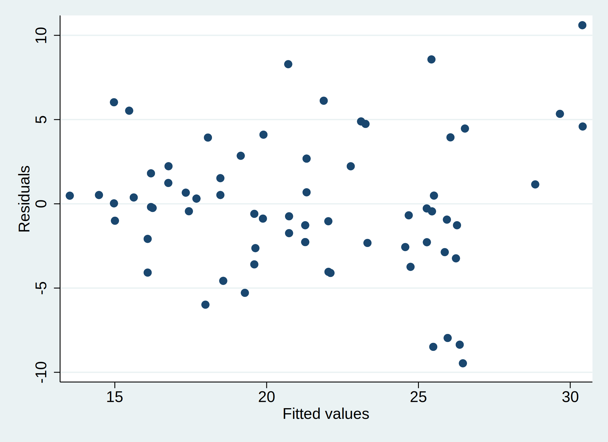
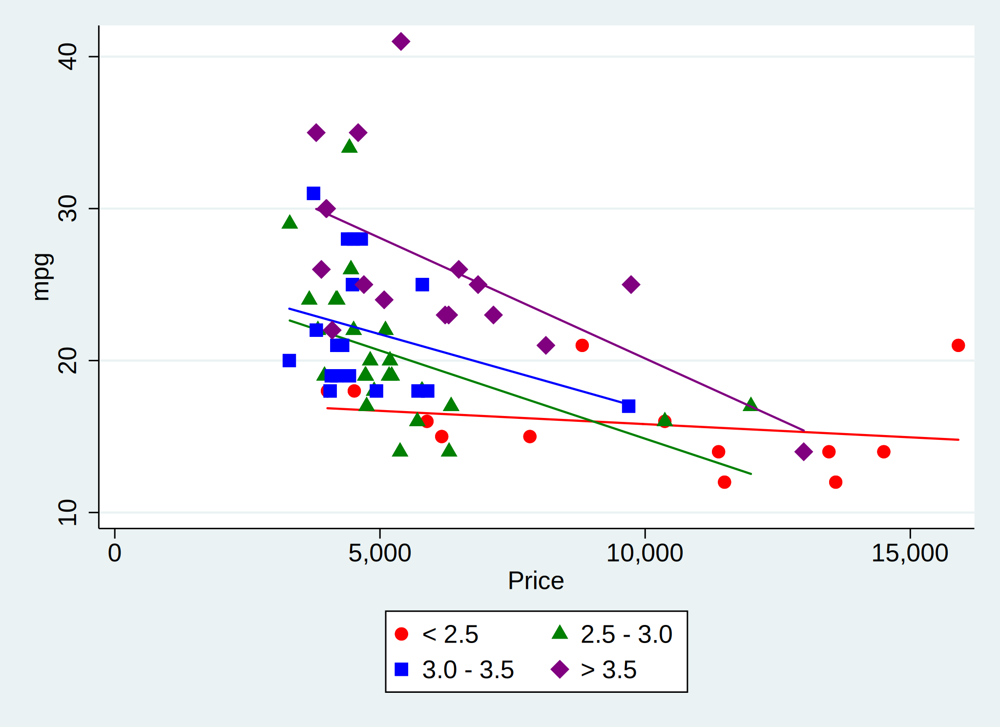
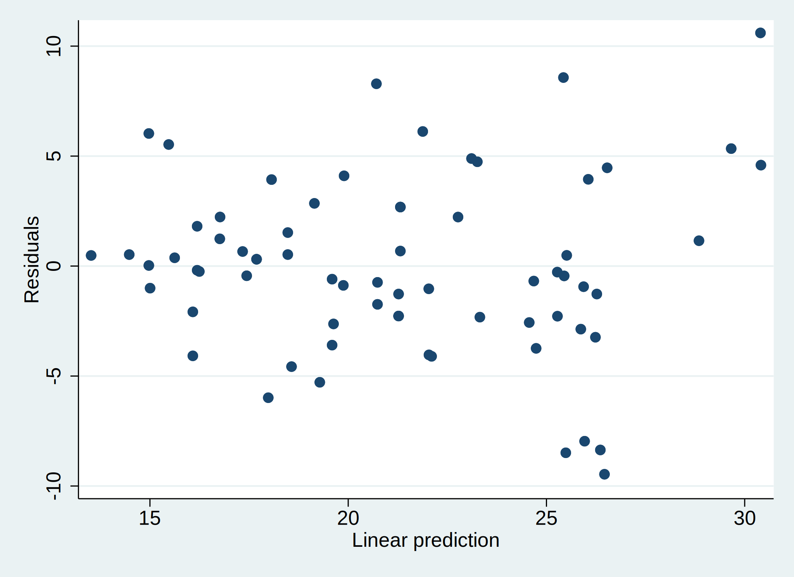
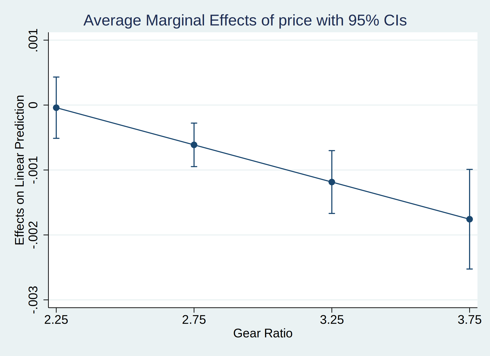
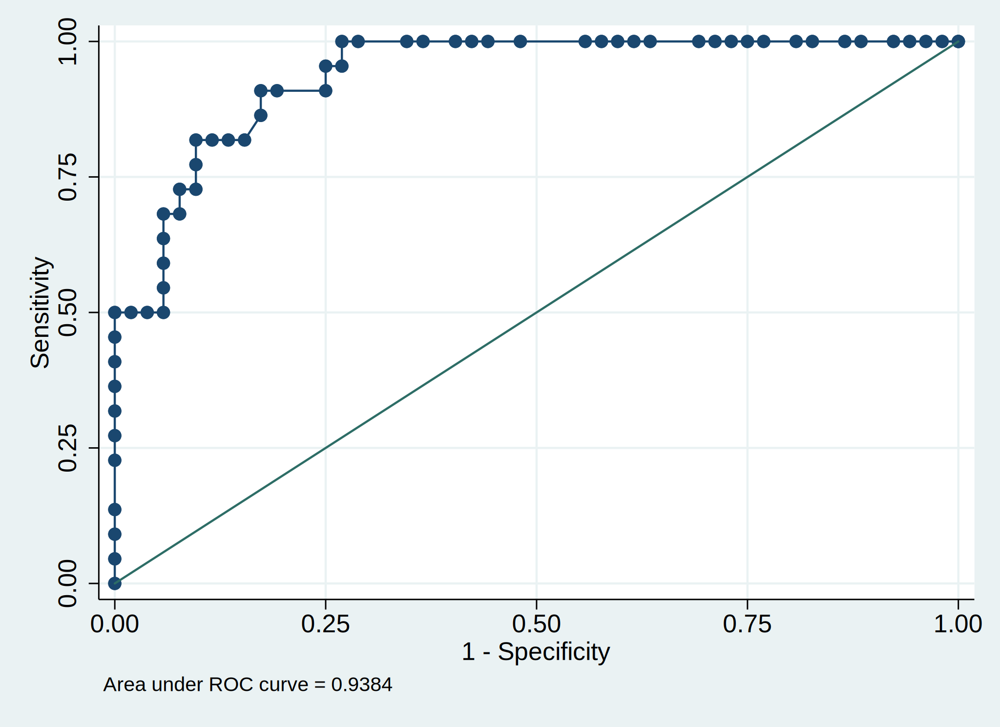

Chapter 5 Regression
One notable exclusion from the previous chapter was comparing the mean of a continuous variables across three or more groups. Two-sample t-tests compare the means across two groups, and \(\chi^2\) tests can compare two categorical variables with arbitrary number of levels, but the traditional test for comparing means across multiple groups is ANOVA (ANalysis Of VAriance). While historically this has been a very useful procedure due to the ease with which it can be performed manually, its modern use has been supplanted by regression, which is mathematically equivalent and easier to extend (the downside of regression is that it is more difficult to calculate, but given that we are no longer doing statistical analyses by hand…). This relationship extends to other variations of ANOVA such as ANCOVA or MANOVA.
If you still want to fit an ANOVA, it can be done with the oneway command. Otherwise we turn now to regression.
Regression is a set of techniques where we attempt to fit a model to a data set estimating the relationships between a set of predictor variables (either continuous or categorical in nature) and a response variable of interest. There are many versions of regression which are appropriate for different types of response variables, or address different concerns when fitting the model. In this chapter and the next, we will discuss a few variations.
5.1 Terminology
When discussing any form of regression, we think of predicting the value of one variable9 based upon several other variables.
The variable we are predicting can be called the “outcome”, the “response” or the “dependent variable”.
The variables upon which we are predicting can be called “predictors”, “covariates”, or “independent variables”.
5.2 Linear Regression
Linear regression (also known as Ordinary Least Squares (OLS) regression) is the most basic form of regression, where the response variable is continuous. Technically the response variable can also be binary or categorical but there are better regression models for those types of outcomes. Linear regression fits this model:
\[ Y = \beta_0 + \beta_1X_1 + \beta_2X_2 + \cdots + \beta_pX_p + \epsilon \]
- \(Y\) represents the outcome variable.
- \(X_1, X_2, \cdots, X_p\) represent the predictors, of which there are \(p\) total.
- \(\beta_0\) represents the intercept. If you have a subject for which every predictor is equal to zero, \(\beta_0\) represents their predicted outcome.
- The other \(\beta\)’s are called the coefficients, and represent the relationship between each predictor and the response. We will cover their interpretation in detail later.
- \(\epsilon\) represents the error. Regression is a game of averages, but for any individual observation, the model will contain some error.
Linear regression models can be used to predict expected values on the response variable given values on the predictors, and \(\epsilon\) represents the difference between a prediction based on the model and what the actual value of the response variable is. Stata can be used to estimate the regression coefficients in a model like the one above, and perform statistical tests of the null hypothesis that the coefficients are equal to zero (and thus that predictor variables are not important in explaining the response). Note that the response \(Y\) is modeled as a linear combination of the predictors and their coefficients.
Some introductory statistical classes distinguish between simple regression (with only a single predictor) and multiple regression (with more than one predictor). While this is useful for developing the theory of regression, simple regression is not commonly used for real analysis, as it ignores one of the main benefits of regression, controlling for other predictors (to be discussed later).
We will now fit a model, discussing assumptions afterwards, because almost all assumption checks can only occur once the model is fit!
5.2.1 Fitting the model
Stata’s regress command fit the linear regression model. It is followed by a varlist where the first variable is the outcome variable and all others are predictors. For this example, let’s use the auto data and fit a relatively simple model, predicting mpg based on gear_ratio and headroom.
. sysuse auto, clear
(1978 Automobile Data)
. regress mpg gear_ratio headroom
Source | SS df MS Number of obs = 74
-------------+---------------------------------- F(2, 71) = 25.48
Model | 1021.0804 2 510.540202 Prob > F = 0.0000
Residual | 1422.37906 71 20.0335078 R-squared = 0.4179
-------------+---------------------------------- Adj R-squared = 0.4015
Total | 2443.45946 73 33.4720474 Root MSE = 4.4759
------------------------------------------------------------------------------
mpg | Coef. Std. Err. t P>|t| [95% Conf. Interval]
-------------+----------------------------------------------------------------
gear_ratio | 6.801356 1.240026 5.48 0.000 4.328815 9.273898
headroom | -1.443796 .6688077 -2.16 0.034 -2.77736 -.1102312
_cons | 5.113759 4.889846 1.05 0.299 -4.636317 14.86384
------------------------------------------------------------------------------
There is a lot of important output here, so we will step through each piece.
First, the top left table is the ANOVA table. If you were to fit a regression model with a single categorical predictor, this would be identical to running ANOVA via oneway. In general we don’t need to interpret anything here, as there are further measures of model fit in the regression frameworks.
Next, the top right part has a series of measures.
-
Regression performs complete case analysis - any observations missing any variable involved in this model is ignored in the model. (See multiple imputation for details on getting around this.) Check “Number of obs” to ensure the number of observations is what you expect. Here, the data has 74 rows, so the regression model is using all the data (there is no missingness in
mpg,weightordisplacement). - The F-test which follows (“F(2, 71)”10 and “Prob > F”) is testing the null hypothesis that all coefficients are 0. In other words, if this test fails to reject, the conclusion is the model captures no relationships. In this case, do not continue interpreting the results; either your conclusion is that there is no relationship, or you need to return to the model design phase. If this test does reject, you can continue interpreting.
- The \(R^2\) (“R-squared”) is a measure of model fit. It ranges from 0 to 1 and is a percentage, explaining what percent in the variation in the response is explained by the linear relationship with the predictors. What’s considered a “large” \(R^2\) depends greatly on your field and the situation, in very general terms, .6 is good and above .8 is great. However, if you know that there are a lot of unmeasured variables, a much lower threshold for a “good” \(R^2\) may be used.
- Mathematically, adding a new predictor to the model will increase the \(R^2\), regardless of how useless the variable is.11 This makes \(R^2\) poor for model comparison, as it would always select the model with the most predictors. Instead, the adjusted \(R^2\) (“Adj R-Squared”) accounts for this; it penalizes the \(R^2\) by the number of predictors in the model. Use the \(R^2\) to measure model fit, use the adjusted \(R^2\) for model comparison.
- The root mean squared error (“Root MSE”, as known as RMSE) is a measure of the average difference between the observed outcome and the predicted outcome. It can be used as another measure of model fit, as it is on the scale of the outcome variable. So for this example, the RMSE is 4.4759 so the average error in the model is about 4.5 mpg.
Finally, we get to the coefficient table. Each row represents a single predictor. The “_cons” row is the intercept; it’s Coef. of 5.1138 represents the average response when all other predictors are 0. This is usually not interesting; how many cars weighing 0 lbs do you know of? So we’ll ignore this and consider only the other rows. The columns are:
- “Coef.”: These are the \(\beta\) from the above model. We interpret each as “For a 1 increase in the value of the covariate with all other predictors held constant, we would predict this change in the response, on average.” For example, for every additional inch12 of headroom in a car (while its gear ratio is constant), it is predicted to have an average of 1.4438 lower mpg.
- “Std. Err.”: This represents the error attached to the coefficient. This is rarely interpreted; but if it gets extremely large or extremely small (and the Coef. doesn’t likewise go to extremes), its an indication there may be something wrong.
-
“t” and “P>|t”: These are testing the hypothesis that the coefficient are equal to zero. In this model, we see that both
gear_ratioandheadroomhave significant p-values. The p-value is specifically measuring the probability of seeing a coefficient as extreme or more extreme than what we observed, if the true coefficient were 0. - “[95% Conf. interval]”: A typically confidence interval for the Coefficient.
Whenever we look at any model, a distinction needs to be drawn between statistical significance and practical significance. While these two interpretations of significance often align, they are not guaranteed to. We often have statistical significance (a p-value less than .05) when there is no practical significance (aka clinical significance, a difference that isn’t scientifically interesting). This is mostly a function of sample size; with a large sample even very small effects can have small p-values. Alternatively, a large practical significance with a low statistical significance can occur with very noisy data or a small sample size, which might indicate further study with a larger sample is needed.
5.2.2 Including categorical predictors
Let’s say we want to add rep78, a categorical variable with 5 levels, to the model. Regression can’t actually handle categorical variables; instead it creates dummy variables. A dummy variable is needed for all but one of the levels of the categorical, the excluded categorical variable is the baseline that all others are compared to13.
Naively, let’s simply add the categorical rep78 to the model:
. regress mpg gear_ratio headroom rep78
Source | SS df MS Number of obs = 69
-------------+---------------------------------- F(3, 65) = 19.94
Model | 1121.49787 3 373.832624 Prob > F = 0.0000
Residual | 1218.70503 65 18.7493081 R-squared = 0.4792
-------------+---------------------------------- Adj R-squared = 0.4552
Total | 2340.2029 68 34.4147485 Root MSE = 4.33
------------------------------------------------------------------------------
mpg | Coef. Std. Err. t P>|t| [95% Conf. Interval]
-------------+----------------------------------------------------------------
gear_ratio | 6.631208 1.330095 4.99 0.000 3.974825 9.287591
headroom | -1.22008 .6651028 -1.83 0.071 -2.548382 .1082225
rep78 | .9568854 .5816842 1.65 0.105 -.2048182 2.118589
_cons | 1.802318 4.849991 0.37 0.711 -7.883782 11.48842
------------------------------------------------------------------------------
We only get a single coefficient. Stata is treating rep78 as continuous.
The issue is that Stata doesn’t know we want to treat rep78 as categorical14. If we prefix the variable name with i., Stata will know it is categorical.
. regress mpg gear_ratio headroom i.rep78
Source | SS df MS Number of obs = 69
-------------+---------------------------------- F(6, 62) = 11.50
Model | 1232.82371 6 205.470619 Prob > F = 0.0000
Residual | 1107.37918 62 17.8609546 R-squared = 0.5268
-------------+---------------------------------- Adj R-squared = 0.4810
Total | 2340.2029 68 34.4147485 Root MSE = 4.2262
------------------------------------------------------------------------------
mpg | Coef. Std. Err. t P>|t| [95% Conf. Interval]
-------------+----------------------------------------------------------------
gear_ratio | 6.847879 1.308106 5.23 0.000 4.233012 9.462745
headroom | -.9726907 .688578 -1.41 0.163 -2.349138 .4037571
|
rep78 |
2 | 1.203595 3.505518 0.34 0.733 -5.803835 8.211025
3 | .0441395 3.232826 0.01 0.989 -6.418187 6.506466
4 | -.0010255 3.309233 -0.00 1.000 -6.616088 6.614037
5 | 4.401329 3.363577 1.31 0.196 -2.322367 11.12502
|
_cons | 2.809121 5.272816 0.53 0.596 -7.731087 13.34933
------------------------------------------------------------------------------
First, note that headroom no longer has a significant coefficient! This implies that rep78 and headroom are correlated, and in the first model where we did not include rep78, all of rep78’s effect was coming through headroom. Once we control for rep78, headroom is no longer significant. We will discuss multicollinearity later, as well as why this is why model selection is bad.
Now we see 4 rows for rep78, each corresponding to a comparison between response 1 and the row. For example, the first row, 2, is saying that when rep78 is 2 compared to when it is 1 (with gear_ratio and headroom held at some fixed level), the average predicted mpg drops by 1.204 (though it is not statistical significant). The last row, 5, is saying that when rep78 is 5 compare to when it is 1 (with gear_ratio and headroom held at some fixed level, the average predicted mpg increases by 4.401 (again, not statistically significant).
What about the other comparison? (Does 2 differ from 4?) Let’s use the margins command. First, we’ll get the marginal means at each level - if every car in the data set had a rep78 level of \(i\), what is the average mileage?
. margins rep78
Predictive margins Number of obs = 69
Model VCE : OLS
Expression : Linear prediction, predict()
------------------------------------------------------------------------------
| Delta-method
| Margin Std. Err. t P>|t| [95% Conf. Interval]
-------------+----------------------------------------------------------------
rep78 |
1 | 20.42972 3.123396 6.54 0.000 14.18614 26.6733
2 | 21.63332 1.548599 13.97 0.000 18.53771 24.72892
3 | 20.47386 .7900386 25.92 0.000 18.8946 22.05313
4 | 20.4287 1.021406 20.00 0.000 18.38694 22.47046
5 | 24.83105 1.341573 18.51 0.000 22.14929 27.51282
------------------------------------------------------------------------------
Note that the difference in the marginal means corresponds to the coefficients above. E.g. the marginal means at repair record 1 and 2 are 20.42972 and 21.63332 respectively, for a difference of 1.2036 - which is exactly (with rounding) the coefficient we saw on rep78 = 2 above!
The t-tests here are simply testing whether the marginal means are different than zero - of no real interest.
Now, we can look at all pairwise comparisons by adding the pwcompare(pv) option to margins:
. margins rep78, pwcompare(pv)
Pairwise comparisons of predictive margins Number of obs = 69
Model VCE : OLS
Expression : Linear prediction, predict()
-----------------------------------------------------
| Delta-method Unadjusted
| Contrast Std. Err. t P>|t|
-------------+---------------------------------------
rep78 |
2 vs 1 | 1.203595 3.505518 0.34 0.733
3 vs 1 | .0441395 3.232826 0.01 0.989
4 vs 1 | -.0010255 3.309233 -0.00 1.000
5 vs 1 | 4.401329 3.363577 1.31 0.196
3 vs 2 | -1.159456 1.698355 -0.68 0.497
4 vs 2 | -1.204621 1.896518 -0.64 0.528
5 vs 2 | 3.197733 2.129823 1.50 0.138
4 vs 3 | -.0451649 1.315328 -0.03 0.973
5 vs 3 | 4.357189 1.601822 2.72 0.008
5 vs 4 | 4.402354 1.642697 2.68 0.009
-----------------------------------------------------
This result is similar to a post-hoc test from ANOVA if you are familiar with it. The only statistical significance we find is 5 vs 3 and 5 vs 4, suggesting that 5 is dissimilar from 3 and 4. (Confusingly, 3 and 4 are not dissimilar from 1 or 2, but 5 is similar to 1 and 2! These sort of things can happen; its best to focus only on the comparisons that are of theoretical interest.)
By default, using i. makes the first level (lowest numerical value) as the reference category. You can adjust this by using ib#. instead, such as:
. regress mpg headroom gear_ratio ib3.rep78
Source | SS df MS Number of obs = 69
-------------+---------------------------------- F(6, 62) = 11.50
Model | 1232.82371 6 205.470619 Prob > F = 0.0000
Residual | 1107.37918 62 17.8609546 R-squared = 0.5268
-------------+---------------------------------- Adj R-squared = 0.4810
Total | 2340.2029 68 34.4147485 Root MSE = 4.2262
------------------------------------------------------------------------------
mpg | Coef. Std. Err. t P>|t| [95% Conf. Interval]
-------------+----------------------------------------------------------------
headroom | -.9726907 .688578 -1.41 0.163 -2.349138 .4037571
gear_ratio | 6.847879 1.308106 5.23 0.000 4.233012 9.462745
|
rep78 |
1 | -.0441395 3.232826 -0.01 0.989 -6.506466 6.418187
2 | 1.159456 1.698355 0.68 0.497 -2.235507 4.554419
4 | -.0451649 1.315328 -0.03 0.973 -2.674469 2.584139
5 | 4.357189 1.601822 2.72 0.008 1.155193 7.559185
|
_cons | 2.853261 4.978251 0.57 0.569 -7.098121 12.80464
------------------------------------------------------------------------------
This does not fit a different model. Both models (with i.rep78 and ib3.rep78) are identical, we’re just adjusting what is reported. If the models do change (especially the model fit numbers in the top right), something has gone wrong!
5.2.3 Interactions
Each coefficient we’ve look at so far is only testing whether there is a relationship between the predictor and response when the other predictors are held constant. What if we think the relationship changes based on the value of other predictors? For example, we might be interested in whether the relationship between a car’s headroom and its mileage depends on it’s gear ratio. Perhaps we think that cars with higher gear ratio (a high gear ratio is indicative of a sportier car) won’t be as affected by headroom as a stand-in for size, because sportier cars generally are better made.
Mathematically an interaction is nothing more than a literal multiplication. For example, if our model has only two predictors,
\[ Y = \beta_0 + \beta_1X_1 + \beta_2X_2 + \epsilon \]
then to add an interaction between \(X_1\) and \(X_2\), we simply add a new multiplicative term.
\[ Y = \beta_0 + \beta_1X_1 + \beta_2X_2 + \beta_3(X_1\times X_2) + \epsilon \]
- \(\beta_1\) represents the relationship between \(X_1\) and \(Y\) when \(X_2\) is identically equal to 0.
- \(\beta_2\) represents the relationship between \(X_2\) and \(Y\) when \(X_1\) is identically equal to 0.
-
\(\beta_3\) represents both:
- the change in the relationship between \(X_1\) and \(Y\) as \(X_2\) changes.
- the change in the relationship between \(X_2\) and \(Y\) as \(X_1\) changes.
Adding these to the regress call is almost as easy. We’ll use # or ## instead. # includes only the interaction, whereas ## includes both the interaction and the main effects.
-
a#b: Only the interaction -
a##b: Main effect fora, main effect forb, and the interaction. -
a b a#b: Same asa##b -
a b a##b: Same asa##b, except it’ll be uglier because you’re including main effects twice and one will be ignored.
Let’s change up the model a bit. Let’s predict mileage based upon price and gear ratio. We include mileage to address whether higher price cars have better mileage (better engineering). However, sportier cars (higher gear ratio) are generally expensive and may have worse mileage for the sake of performance. By including an interactino between price and gear ratio, we can test whether the relationship between price and mileage depends on the sportiness of the car.
. regress mpg c.price##c.gear_ratio
Source | SS df MS Number of obs = 74
-------------+---------------------------------- F(3, 70) = 27.15
Model | 1314.01011 3 438.00337 Prob > F = 0.0000
Residual | 1129.44935 70 16.1349907 R-squared = 0.5378
-------------+---------------------------------- Adj R-squared = 0.5180
Total | 2443.45946 73 33.4720474 Root MSE = 4.0168
------------------------------------------------------------------------------
mpg | Coef. Std. Err. t P>|t| [95% Conf. Interval]
-------------+----------------------------------------------------------------
price | .002536 .0009513 2.67 0.010 .0006387 .0044333
gear_ratio | 14.30867 2.545822 5.62 0.000 9.231186 19.38615
|
c.price#|
c.gear_ratio | -.001145 .000342 -3.35 0.001 -.0018271 -.0004629
|
_cons | -16.67042 7.509179 -2.22 0.030 -31.647 -1.693832
------------------------------------------------------------------------------
Note that we used c., similar to i.. c. forces Stata to treat it as continuous. Stata assumes anything in an interaction is categorical, so we need c. here! This can get pretty confusing, but it’s never wrong to include i. or c. when specifying a regression.
Lots of significance here, but once we include an interaction, the relationship between the variables included in the interaction and the response are not constant - the relationship depends on the value of the other interacted variables. This can be hard to visualize with the basic regression output, so we’ll look at margins again instead. We’ll want to look at the relationship between mpg and price at a few different values of gear_ratio to get a sense of the pattern. gear_ratio ranges from 2.19 to 3.89 (this can be obtained with summarize or codebook, just don’t forget to save the results or re-run the regress command to gain access to the postestimation commands again), so let’s look at the relationship at those extremes and at 3:
. margins, dydx(price) at(gear_ratio = (2.25 2.75 3.25 3.75))
Average marginal effects Number of obs = 74
Model VCE : OLS
Expression : Linear prediction, predict()
dy/dx w.r.t. : price
1._at : gear_ratio = 2.25
2._at : gear_ratio = 2.75
3._at : gear_ratio = 3.25
4._at : gear_ratio = 3.75
------------------------------------------------------------------------------
| Delta-method
| dy/dx Std. Err. t P>|t| [95% Conf. Interval]
-------------+----------------------------------------------------------------
price |
_at |
1 | -.0000403 .0002367 -0.17 0.865 -.0005124 .0004318
2 | -.0006128 .0001679 -3.65 0.001 -.0009477 -.0002779
3 | -.0011853 .0002426 -4.89 0.000 -.0016691 -.0007015
4 | -.0017578 .0003847 -4.57 0.000 -.002525 -.0009906
------------------------------------------------------------------------------
This tells an interesting story. Notice the “dy/dx” column. All the values are negative and getting more negative. As the gear ratio increases, the relationship between price and mileage gets more negative. This effect is significant at all levels except with the lowest gear ratio. In the regression model above, the coefficient on price was positve and highly signifcant. How do we explain this seeming contradiction? Remember, the interpretation of the main effects in the presence of interactions is it’s the relationship between price and mileage when gear ratio is 0. Gear ratio is never 0! We are extrapolating.
To better understand the pattern we’re seeing, let’s visualize this:
. marginsplot
Variables that uniquely identify margins: gear_ratio

With low gear_ratio, there is no relationship between price and mileage - increasing the cost of a low gear ratio car is predicted to have no effect on milage, on average. As the gear ratio increases, the relationship becomes significant and negative - among sporty cars (higher gear ratio), the more expensive the car is the worse it’s mileage!
We can create a rather complicated looking plot to examine this.
. twoway (scatter mpg price if gear_ratio < 2.5, ///
> msymbol(circle) mcolor(red)) ///
> (lfit mpg price if gear_ratio < 2.5, ///
> lcolor(red)) ///
> (scatter mpg price if gear_ratio >= 2.5 & gear_ratio < 3.0, ///
> msymbol(triangle) mcolor(green)) ///
> (lfit mpg price if gear_ratio >= 2.5 & gear_ratio < 3.0, ///
> lcolor(green)) ///
> (scatter mpg price if gear_ratio >= 3.0 & gear_ratio < 3.5, ///
> msymbol(square) mcolor(blue)) ///
> (lfit mpg price if gear_ratio >= 3.0 & gear_ratio < 3.5, ///
> lcolor(blue)) ///
> (scatter mpg price if gear_ratio >= 3.5 & gear_ratio < ., ///
> msymbol(diamond) mcolor(purple)) ///
> (lfit mpg price if gear_ratio >= 3.5 & gear_ratio < ., ///
> lcolor(purple)) , ///
> legend(label(1 "< 2.5") label(3 "2.5 - 3.0") ///
> label(5 "3.0 - 3.5") label(7 "> 3.5") ///
> order(1 3 5 7)) ///
> ytitle("mpg")

Each color represents a selection of cars with the given gear ratios. The cars with the lowest gear_ratio, in red, show no relationship between price and mileage. The green and purple cars with mid-range gear ratio, show negative relationships. The strongest negative relationship is among the purple cars with the highest gear ratio.
There are a few variations of the margins call we might want to use. First, we could reverse the roles of price and gear_ratio. We would do this if our hypothesis was that sportier cars decrease mileage, and the more expensive the car is, the stronger this effect.
margins, dydx(gear_ratio) at(price = (5000 10000 15000))
Next, what if we have a categorical by continuous interaction? Instead of dydx, we’d simply give the categorical variable in the varlist:
regress c.continuous##i.categorical
margins categorical, at(continuous = (1.5 5 8.5))
margins, dydx(continuous) at(categorical = (1 2 3))
Finally, for categorical by categorical interactions, we get one additional variation:
regress i.cat1##i.cat2
margins cat1#cat2
Often discovering which variety of these you want may require some trial and error!
5.2.3.1 Centering
Some sources suggest centering continuous predictors before including them in an interaction. This can help slightly with interpretation (the main effects are the relationship when the other variable involved in the interaction are at their mean, rather than at zero) but doesn’t actually affect model fit.
To center, use the following:
. summ gear_ratio
Variable | Obs Mean Std. Dev. Min Max
-------------+---------------------------------------------------------
gear_ratio | 74 3.014865 .4562871 2.19 3.89
. gen gear_ratioc = gear_ratio - `r(mean)'
. summ price
Variable | Obs Mean Std. Dev. Min Max
-------------+---------------------------------------------------------
price | 74 6165.257 2949.496 3291 15906
. gen pricec = price - `r(mean)'
. summ gear_ratioc pricec
Variable | Obs Mean Std. Dev. Min Max
-------------+---------------------------------------------------------
gear_ratioc | 74 2.92e-09 .4562871 -.8248648 .8751352
pricec | 74 -.0000154 2949.496 -2874.257 9740.743
. regress mpg c.pricec##c.gear_ratioc
Source | SS df MS Number of obs = 74
-------------+---------------------------------- F(3, 70) = 27.15
Model | 1314.01011 3 438.003371 Prob > F = 0.0000
Residual | 1129.44935 70 16.1349907 R-squared = 0.5378
-------------+---------------------------------- Adj R-squared = 0.5180
Total | 2443.45946 73 33.4720474 Root MSE = 4.0168
------------------------------------------------------------------------------
mpg | Coef. Std. Err. t P>|t| [95% Conf. Interval]
-------------+----------------------------------------------------------------
pricec | -.0009161 .0001927 -4.75 0.000 -.0013005 -.0005317
gear_ratioc | 7.249342 1.102393 6.58 0.000 5.050688 9.447996
|
c.pricec#|
c. |
gear_ratioc | -.001145 .000342 -3.35 0.001 -.0018271 -.0004629
|
_cons | 20.82048 .4881841 42.65 0.000 19.84683 21.79413
------------------------------------------------------------------------------
If you compare fit characteristics and the interaction coefficient (and other coefficients), you’ll notice nothing has changed save the coefficients for pricec and gear_ratioc. Now the interpretation the price main effect (which before was nonsense because gear ratio was never 0) is -.0009161, which corresponds to the relationship between price and mileage when gear_ratio is 3.014865.
If we were to re-run the margins commands from before, we’d see the same results (albeit with different scaling both in the at( ) option and in the axes of the response.)
5.2.4 Robust standard errors
The standard error associated with each coefficient are determined with the assumption that the model is “true” and that, were we given an infinite sample size, the estimates \(\hat{\beta}\) would converge to the true \(\beta\). In many situations, this is clearly untrue.
If you believe this is untrue, the estimates will be unaffected, but their standard errors will be incorrect. We can adjust for this by using “robust” standard errors, also known as Sandwich estimators or Huber-White estimators, with the vce(robust) option to regress.
. regress mpg c.price##c.gear_ratio, vce(robust)
Linear regression Number of obs = 74
F(3, 70) = 25.72
Prob > F = 0.0000
R-squared = 0.5378
Root MSE = 4.0168
------------------------------------------------------------------------------
| Robust
mpg | Coef. Std. Err. t P>|t| [95% Conf. Interval]
-------------+----------------------------------------------------------------
price | .002536 .0008763 2.89 0.005 .0007883 .0042837
gear_ratio | 14.30867 2.55241 5.61 0.000 9.218048 19.39929
|
c.price#|
c.gear_ratio | -.001145 .0003043 -3.76 0.000 -.0017519 -.0005381
|
_cons | -16.67042 7.455919 -2.24 0.029 -31.54078 -1.800056
------------------------------------------------------------------------------
Notice that compared to the previous model, the Coef estimates are the same but the standard errors (and corresponding t-statistic, p-value and confidence interval) are slightly different.
Typically, the robust standard errors should be slightly larger than the non-robust standard errors, but not always. The only common situation where the robust standard errors will decrease is when the error variance is highest for observations near the average value of the predictors. This does not often happen (generally the higher residuals occur in observations that could be considered outliers).
There has been some argument that robust standard errors should always be used, because if the model is correctly specified, the robust standard errors and regular standard errors should be almost identical, so there is no harm in using them.
5.2.5 Assumptions
There are three main assumptions when running a linear regression. Some we can test, some we cannot (and need to rely on our knowledge of the data).
5.2.5.1 Relationship is linear and additive
Recall the linear regression model:
\[ Y = \beta_0 + \beta_1X_1 + \beta_2X_2 + \cdots + \beta_pX_p + \epsilon \]
This very explicitly assumes that the relationship is linear (as opposed to something non-linear, such as quadratic or exponential) and additive (as opposed to multiplicative). We can examine this assumption by looking at plots of the residuals (estimated errors):
. rvfplot

What we’re seeing here is a scatterplot between the fitted values (the predicted values for each individual) and their errors (the difference between the predicted values and observed values). If you can see a pattern in the scatterplot, that is evidence that this assumption is violated. Importantly, not seeing any pattern is not evidence that the assumption is valid! You’ll still need to cover this assumption with theory and knowledge of the data.
This image, from Julian Faraway’s Linear Models with R book, demonstrates a lack of pattern (the first) and a pattern (the third). (We will discuss the second plot below).

If this assumption is violated, you will need to reconsider the structure in your model, perhaps by adding a squared term (e.g. reg y c.x c.x#c.x).
5.2.5.1.1 Obtaining predicted values and residuals
In the rvfplot, we plotted residuals versus predicted values - neither of which we have in the data. If there is some analysis beyond what rvfplot produces that you’re interested in, the predict command can obtain these. The general syntax for predict is:
predict <new var name>, <statistic>
There are quite a few options for the “statistic”, but the two most commonly used ones are:
-
xb: The linear prediction (also the default). This is the predicted value for each individual based on the model. -
residuals: The residuals. The difference between the predicted value and observed value.
In other words, we can replicate the above rvfplot via:
. predict linearpredictor, xb
. predict resids, residuals
. twoway scatter resids linearpredictor

Of course we can clean this plot up with the typical options.
5.2.5.2 Errors are homogeneous
“Homogeneity” is a fancy term for “uniform in distribution”, whereas “heterogeneity” represents “not uniform in distribution”. If we were to take a truly random sample of all individuals in Michigan, the distribution of their heights would be homogeneous - it is reasonable to assume there is only a single distribution at work there. If on the other hand, we took a random sample of basketball players and school children, this would definitely be heterogeneous. The basketball players have a markedly difference distribution of heights that school children!
In linear regression, the homogeneity assumption is that the distribution of the errors is uniform. Violations would include errors changing as the predictor increased, or several groups having very different noise in their measurements.
This is an assumption we can examine, again with the residuals vs fitted plot. We’re looking for either a blatant deviation from a mean of 0, or an increasing/decreasing variability on the y-axis over time. Refer back to the image above, looking at the middle plot. As the fitted values increase, the error spreads out.
If this assumption is violated, you may consider restructuring your model as above, or transforming either your response or predictors using log transforms.
5.2.5.3 Independence
This last assumption is that each row of your data is independent. If you have repeated measures, this is violated. If you have subjects drawn from groups (i.e. students in classrooms), this is violated. There is no way to test for this, it requires knowing the data set.
If this assumption is violated, consider fitting a mixed model instead.
5.2.6 Miscellaneous concerns
5.2.6.1 Multicollinearity
Multicollinearity is an issue when 2 or more predictors are correlated. If only two are correlated, looking at their correlation (with pwcorr or correlate) may provide some indication, but you can have many-way multicollinearity where each pairwise correlation is low. You can use the variance inflation factor to try and identify if this is an issue.
Let’s fit a model with a bunch of main effects. We use quietly to suppress the output to save space.
. quietly regress mpg headroom trunk weight length turn displacement
. estat vif
Variable | VIF 1/VIF
-------------+----------------------
weight | 15.06 0.066412
length | 12.53 0.079833
displacement | 5.17 0.193585
turn | 4.25 0.235511
trunk | 2.80 0.357428
headroom | 1.81 0.551207
-------------+----------------------
Mean VIF | 6.93
The rule of thumb is VIF > 10 or 1/VIF (called the tolerance) < .1 suggests that the variable is involved in multicollinearity and more exploration may be needed.
Shockingly, we see that weight and length have high VIF’s - not surprisingly these are related!
Note that generally, a high VIF on an interaction or a main effect in the presence of an interaction is not a concern (of course an interaction is collinear with its main effects!).
Multicollinearity can be an issue because the more correlated predictors are, the more likely that their combined effect will be inappropriately spread among them. For a very simple example, imagine that we have the model
\[ Y = \beta_0 + \beta_1X_1 + \beta_2X_2 + \epsilon \]
If \(X_1\) and \(X_2\) are uncorrelated, then we can estimate \(\beta_1\) and \(\beta_2\) without a problem. Consider the extreme situations where \(X_1\) and \(X_2\) are perfectly correlated.15 We can therefore rewrite the equation as
\[ Y = \beta_0 + (\beta_1 + \beta_2)X_1 + \epsilon \]
since with perfect correlation, \(X_1\) and \(X_2\) are identical.16 Now, when we fit the model, we would have estimates of \(\beta_1\) and \(\beta_2\) which sum to the “truth”, but the individual level of each of \(\beta_1\) and \(\beta_2\) could be anything. For example, if the “true” \(\beta_1\) and \(\beta_2\) are 1 and 3, they sum to 4. We could get estimated coefficients of 1 and 3, or 3 and 1, or -20 and 24!
This is an extreme example, but in practice we can be close to this situation.
5.2.6.2 Overfitting
Overfitting occurs when a model includes so many predictors that you can no longer generalize to the population. The rule of thumb is that you should have no more than one predictor for every 10-20 observations. The smaller your sample size, the more conservative you should be. For example, a sample size of 100 should use no more than 5-10 predictors. Recall that a categorical predictor with \(k\) different levels adds \(k-1\) predictors!
5.2.6.3 Model Selection is bad
There is a literature on the idea of model selection, that is, an automated (or sometimes manual) way of testing many versions of a model with a different subset of the predictors in an attempt to find the model that fits best. These are sometimes called “stepwise” procedures.
This method has a number of flaws, including
- Doing this is basically “p-value mining”, that is, running a lot of tests till you find a p-value you like.
- Your likelihood of making a false positive is very high.
- As we saw earlier, adding a new variable can have an effect on existing predictors.
Instead of doing model selection, you should use your knowledge of the data to select a subset of the variables which are either a) of importance to you, b) theoretically influential on the outcome (e.g. demographic variables) or c) what others (reviewers) would think are influential on the outcome. Then you can fit a single model including all of this. The “subset” can be all predictors if the sample size is sufficient.
Note that adjustments to fix assumptions (e.g. transformations) or multicollinearity would not fall into the category of model selection and are fine to use.
5.3 Exercise 4
Reload the NHANES data.
webuse nhanes2, clear
Fit a linear regression model predicting lead based upon sex, race, age, weight, height, and region. Make sure to handle categorical variables appropriately! Answer the following questions which may or may not require running additional commands.
- How well does the model fit?
- Do any assumptions appear violated?
- Does multicollinearity appear to be a concern?
- Does one gender tend to have higher levels of lead? Does this appear practically interesting?
- Is the coefficient on age statistically significant? Do you think it is practically interesting?
- Looking at all the differences between regions, what conclusion can you draw?
- Add an interaction between gender and age. What is the interpretation here?
5.4 Logistic Regression
Let’s violate one of the assumptions. Instead of the relationship being linear, we can generalize to allow the relationship to be any functional form. These types of models are called “Generalized Linear Models” or “GLMs”, mainly because we can transform the model to be linear in some sense. Logistic regression is one specific form of a GLM, others include Poisson and Negative Binomial regression.
Logistic regression is used when the outcome is dichotomous - either a positive outcome (1) or a negative outcome (0). For example, presence or absence of some disease. The equation for this model is
\[ P(Y = 1 | X) = \frac{1}{1 + e^{-(\beta_0 + \beta_1X_1 + \cdots + \beta_pX_p)}} + \epsilon. \]
The right hand side is what’s known as the “logit” function, that is, logit(\(z\)) = \(\frac{1}{1 + e^{-z}}\). Understanding this form isn’t crucial to understanding the model, but there are two quirks that need to be noted.
- The relationship between the \(X\)’s and the outcome is nonlinear.
- Note that the left-hand side of this model is not just \(Y\), but rather, the probability of \(Y\) being 1 (a positive result) given the predictors. Unlike linear regression where we are explicitly predicting the outcome, a logistic model is instead trying to predict everyone’s probability of a positive outcome.
5.4.1 Fitting the logistic model
We can fit this using the logit command in State. It works very similarly to regress. Let’s predict whether a car is foreign based on headroom and gear ratio again.
. logit foreign gear_ratio headroom
Iteration 0: log likelihood = -45.03321
Iteration 1: log likelihood = -24.070574
Iteration 2: log likelihood = -21.955086
Iteration 3: log likelihood = -21.905247
Iteration 4: log likelihood = -21.905069
Iteration 5: log likelihood = -21.905069
Logistic regression Number of obs = 74
LR chi2(2) = 46.26
Prob > chi2 = 0.0000
Log likelihood = -21.905069 Pseudo R2 = 0.5136
------------------------------------------------------------------------------
foreign | Coef. Std. Err. z P>|z| [95% Conf. Interval]
-------------+----------------------------------------------------------------
gear_ratio | 5.731199 1.32087 4.34 0.000 3.142342 8.320056
headroom | -.2450151 .453866 -0.54 0.589 -1.134576 .6445459
_cons | -18.2719 4.565065 -4.00 0.000 -27.21926 -9.324539
------------------------------------------------------------------------------
When you try this yourself, you may notice that its not quite as fast as regress. That is because for linear regression we have a “closed form solution” - we just do some quick math and reach an answer. However, almost every other type of regression lacks a closed form solution, so instead we solve it iteratively - Stata guesses at the best coefficients that minimize error17, and keeps guessing (using the knowledge of the previous guesses) until it stops getting significantly different results.
From this output, we get the “Number of obs” again. Instead of an ANOVA table with a F-statistic to test model significance, there is instead a \(\chi^2\) testing whether all coefficients are identically 0.
When we move away from linear regression, we no longer get an \(R^2\) measure. There have been various pseudo-\(R^2\)’s suggested, and Stata reports one here, but be careful assigning too much meaning to it. It is not uncommon to get pseudo-\(R^2\) values that are negative or above 1. We’ll discuss measuring goodness of fit below.
The coefficients table is interpreted in almost the same way as with regression. We see that gear_ratio has a significant positive coefficient, and headroom’s coefficient is indistinguishable from 0. We cannot nicely interpret the coefficients. All we can say is that “As gear ratio increases, the probability of a car being foreign increases.”
To add any interpretability to these coefficients, we should instead look at the odds ratios (these coefficients are known as the log-odds). We can obtain this with the or options.
. logit, or
Logistic regression Number of obs = 74
LR chi2(2) = 46.26
Prob > chi2 = 0.0000
Log likelihood = -21.905069 Pseudo R2 = 0.5136
------------------------------------------------------------------------------
foreign | Odds Ratio Std. Err. z P>|z| [95% Conf. Interval]
-------------+----------------------------------------------------------------
gear_ratio | 308.3386 407.2751 4.34 0.000 23.15803 4105.388
headroom | .7826927 .3552376 -0.54 0.589 .3215584 1.905122
_cons | 1.16e-08 5.30e-08 -4.00 0.000 1.51e-12 .0000892
------------------------------------------------------------------------------
Note: _cons estimates baseline odds.
Notice that the “LR chi2(2)”, “Pseudo R2”, “z” and “P>|z|” do not change - we’re fitting the same model! We’re just changing how the coefficients are represented, similar to changing the baseline of a categorical variable.
Odds ratios null hypothesis is at 1, not at 0. Odds ratios are always positive. So a significant odds ratio will be away from 1, rather than away from 0 as in linear regression or the log odds. We can interpret odds ratios as percentage changes in the odds. The odds ratio for gear_ratio is 308.3386, suggesting that a 1 increase in the odds ratio leads to a 30,833% increase in the odds that the car is foreign! This is massive! But keep in mind, gear_ratio had a very narrow range - an increase of 1 is very large. Let’s rescale gear_ratio and try again.
. gen gear_ratio2 = gear_ratio*10
. logit foreign gear_ratio2 headroom, or
Iteration 0: log likelihood = -45.03321
Iteration 1: log likelihood = -24.070576
Iteration 2: log likelihood = -21.955089
Iteration 3: log likelihood = -21.905249
Iteration 4: log likelihood = -21.905071
Iteration 5: log likelihood = -21.905071
Logistic regression Number of obs = 74
LR chi2(2) = 46.26
Prob > chi2 = 0.0000
Log likelihood = -21.905071 Pseudo R2 = 0.5136
------------------------------------------------------------------------------
foreign | Odds Ratio Std. Err. z P>|z| [95% Conf. Interval]
-------------+----------------------------------------------------------------
gear_ratio2 | 1.773792 .2342948 4.34 0.000 1.36921 2.297922
headroom | .7826928 .3552376 -0.54 0.589 .3215585 1.905122
_cons | 1.16e-08 5.30e-08 -4.00 0.000 1.51e-12 .0000892
------------------------------------------------------------------------------
Note: _cons estimates baseline odds.
Note once again that the model fit characteristics haven’t changed; we’ve fit the same model, just with different units. Now the interpretation is more reasonable, for every .1 increase in gear_ratio (which corresponds to a 1 increase in gear_ratio2), we predict an increase in the odds of a car being foreign by 77.4%.
The odds ratio on headroom is not distinguishable from 1, however, if it were, the interpretation is that increasing the headroom by 1 inch is predicted to decrease the odds of a car being foreign by about 21.7% on average (1 - 0.783).
5.4.2 Categorical Variables and Interactions
Both categorical variables and interactions can be included as they were in linear regression, with the appropriate interpretation of coefficients/odds ratios. The margins command also works the same.
The predict command adds a new statistic. xb now is the linear predictor, which is often not useful. Instead, the pr statistic returns the estimated probability of a positive outcome.
5.4.3 Logistic regression assumptions
The assumptions for logistic regression are simpler than linear. The outcome measure must be binary with a 0 for a negative response and 1 for a positive. (Technically they don’t have to be positive/negative. We could think of predicting male/female and code male = 0 and female = 1. However, the convention would be to consider the outcome as “The person is female” so a 1 represents a “success” and a 0 a “failure” of that statement.) The errors in a logistic regression model are fairly contained (you can’t be wrong than more than 1!) so there are no real assumptions about them. The independence assumption is still here and still important, again, a mixed model (specifically a logistic mixed model) may be appropriate if the data is not independent.
5.4.4 Logistic goodness of fit
As we mentioned earlier, there are various issues with the Pseudo \(R^2\) reported by logit, so use it carefully. There are two alternate approaches.
The first is to look at the ROC curve:
. lroc
Logistic model for foreign
number of observations = 74
area under ROC curve = 0.9384

The ROC curve is a bit complicated to explain, but basically over a range of thresholds, it classifies each observation as predicting a 0 or 1. E.g., with a threshold of .2, any observation whose predicted probability is below .2 is classified as a “0”, any observation whose predicted probability is above .2 is classified as a “1”. For each such threshold, the specificity (fraction of correctly classified “0”’s) versus the sensitivity(fraction of correctly classified “1”’s) are computed and plotted against each other. If the two fractions are equal, it’s a coin-flip and the model does no better than chance. On the other hand, the higher the ratio of sensitivity/(1 - specificity) is, the better classified we are.
The bottom left corner of the ROC curve is a threshold of 0 and the top right of 1, both of which would classify every observation the same, so they’re no good. We want to the ROC curve to be as close to “filling” the top area as possible. The Area under the ROC curve (called AUC) is a measure of fit; the fit here is .9384, which is very good. (The AUC ranges from .5 to 1. .5 indicates, as we’ve said, chance, and 1 indicates a perfect fit. An AUC of 1 is actually troublesome as we might be overfit.)
The second is a more formal test. There are two variants, a Pearson \(\chi^2\) test and the Hosmer-Lemeshow test. Both are fit with the estat gof command. Both are testing the hypothesis that the observed positive responses match predicted positive responses in subgroups of the population. Therefore we do not want to reject these tests, and a large p-value is desired.
. estat gof
Logistic model for foreign, goodness-of-fit test
------------------------------------------------
number of observations = 74
number of covariate patterns = 58
Pearson chi2(55) = 42.92
Prob > chi2 = 0.8817
We see here a p-value of 0.882, failing to reject the null, so there is no evidence that the model does not fit well.
There is some concern that when the “number of covariate patterns” is close to the number of observations , the Pearson test is invalid. In this data, we see that 58 is indeed “close” to 74. Instead, we can use the Hosmer-Lemeshow by passing the group(#) option:
. estat gof, group(10)
Logistic model for foreign, goodness-of-fit test
------------------------------------------------
(Table collapsed on quantiles of estimated probabilities)
number of observations = 74
number of groups = 10
Hosmer-Lemeshow chi2(8) = 9.89
Prob > chi2 = 0.2727
The p-value remains insignificant at 0.273, still no evidence of poor model fit.
Why did we choose 10 groups? It’s just the standard. The only thing to keep in mind is that the Hosmer-Lemeshow test is only appropriate if the number of groups is greater than the number of predictors (including the intercept). In this model, we had two predictors, so that’s 3 total (including the intercept), so 10 is OK.
There are some limitations to Hosmer-Lemeshow, and there are more modern alternatives. However, Stata has not implemented any yet that I’m aware of.
5.4.5 Separation
Since the logistic regression model is solved iteratively, this can fail for a number of reasons. Before you begin interpreting the model, you’ll want to glance at the iteration steps and make sure that no errors were printed. The most common failure is due to separation.
With a binary outcome instead of a continuous outcome, it is much easier to have a predictor (or set of predictors) that perfectly predict the outcome. Consider trying to predict gender based on height. With a smaller sample, it’s not hard to imagine a scenario where every male is taller than every female. This is called “perfect separation”; using this sample, knowing height gives perfect information about gender
“Partial separation” can also occur; this is when prediction is perfect only for one limit. Take the height scenario again; say everyone above 5’8" is male, and there are two men and all the women below 5’8“. Here, we will always predict Male for heights above 5’8”.
Separation (of either type) often produces coefficients to be extreme with large standard errors. Stata will sometimes warn about this, but not always. If you notice these exceptional coefficients or if Stata does warn about separation, you’ll need to investigate and consider excluding certain predictors. It may seem counter-intuitive to exclude extremely highly predictive variables, but if a variable produces perfect separation, you don’t need a model to inform you of that.
You can examine separation by looking at a table. Imagine we wanted to restructure rep78 as a binary variable, with low repairs (repair record below 3) and high repairs (repair records 3 and above).
. gen repair_binary = rep78 >= 3
. replace repair_binary = . if rep78 >= .
(5 real changes made, 5 to missing)
. label define repbinlabel 0 "Low repairs" 1 "High repairs"
. label value repair_binary repbinlabel
. tab repair_binary
repair_binar |
y | Freq. Percent Cum.
-------------+-----------------------------------
Low repairs | 10 14.49 14.49
High repairs | 59 85.51 100.00
-------------+-----------------------------------
Total | 69 100.00
Let’s try fitting the model:
. logit foreign repair_binary
note: repair_binary != 1 predicts failure perfectly
repair_binary dropped and 10 obs not used
Iteration 0: log likelihood = -38.411464
Iteration 1: log likelihood = -38.411464
Logistic regression Number of obs = 59
LR chi2(0) = 0.00
Prob > chi2 = .
Log likelihood = -38.411464 Pseudo R2 = 0.0000
------------------------------------------------------------------------------
foreign | Coef. Std. Err. z P>|z| [95% Conf. Interval]
-------------+----------------------------------------------------------------
repair_bin~y | 0 (omitted)
_cons | -.5930637 .2719096 -2.18 0.029 -1.125997 -.0601307
------------------------------------------------------------------------------
Notice the note at the top of the model, and notice that nothing is estimated for repair_binary. We have partial separation:
. tab foreign repair_binary
| repair_binary
Car type | Low repai High repa | Total
-----------+----------------------+----------
Domestic | 10 38 | 48
Foreign | 0 21 | 21
-----------+----------------------+----------
Total | 10 59 | 69
Since we have a zero in one of the cells, that’s partial separation. Complete separation would be zero in both off-diagonal cells.
5.4.6 logit Miscellaneous
The logit model supports the margins command just like regress does. It does not support estat vif because variance inflation factors are not defined for logistic models.
Collinearity, overfitting, and model selection remain concerns in the logistic model.
Robust standard errors via vce(robust) are supported.
5.4.7 logit vs logistic
Instead of logit, we could run the logistic command. The only difference is that logistic reports the odds ratio by default whereas logit reports the log odds. My personal preference is logit, but there’s no need to use one over the other.
5.5 Other regression models
There are several other models which we will not cover, but function similarly to the above.
-
Poisson regression is useful when you have count data; i.e. number of visitors or number of thunderstorms in a month. It can be fit with the
poissoncommand, and results are interpreted similar to logistic regression (coefficients vs odds ratios); but instead of predicting a positive outcome, its predicting a larger count. If you have very large counts (such that a histogram appears to show a bell curve), linear regression can be used instead. -
Poisson has the strong assumption that the mean of the outcome is equal to its variance (small average counts have little noise; large average counts have a lot of noise). If this assumption is violated (or you want to check it), negative binomial regression also handles count data, without that assumptions, using
nbreg. The output will include a test of “alpha=0”, if this fails to reject, then Poisson regression is sufficient. -
There are two extensions to logistic regression, ordinal logistic and multinomial. Ordinal logistic is used when there are more than 2 outcome categories, and they are ordered (e.g. not sick (0), mildly sick (1), very sick (2)). Using
ologit, Stata estimates an underlying continuous distribution and returns the “cut points”, allowing categorization. If there are multiple groups but not ordered, e.g. race, usemlogitfor multinomial logistic regression. It essentially fits a model predicting membership in each group versus all other, with some restrictions across the models.
5.6 Exercise 5
Reload the NHANES data.
webuse nhanes2, clear
This time we’ll fit a logistic regression model, prediciting diabetes status on sex, race, age, weight, height, and region. As before, be sure to handle categorical variables appropriately.
- Does the model fit well? Does the model classify well?
- What predicts higher odds of having diabetes?